上級下僕、下級下僕 [梅吉]
なかなか上手く食べられなかったサラダ。
お互い要領が分かってきたのかなかなか良い感じになってきました。
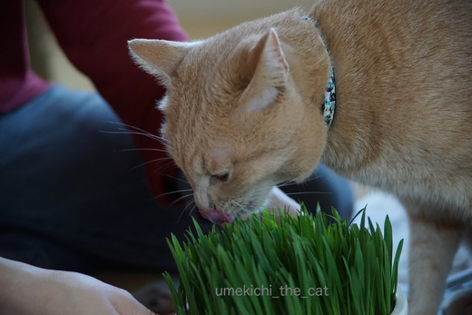
上級下僕がちゃんとサラダ鉢を抑えてあげて梅吉さんが引っこ抜く。
本にゃんは食べてるつもりなんですがほとんど口に入っていません^^;
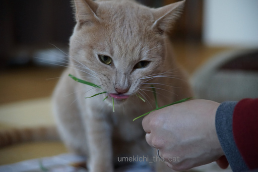
あたりに散乱した草を素早く集めて差し出す上級下僕。
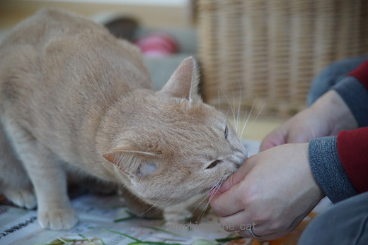
手までかじらないでくださいな。
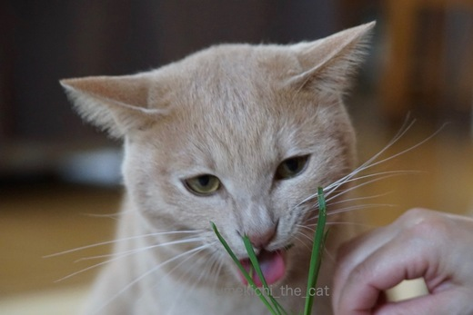
鼻にしわを寄せて真剣に食べてます。妖怪猫の本性が出ちゃってますよ！
草の集め方が遅かったり草の持ち方が悪いと
爪を出した手で下僕の手をぎゅ〜〜〜っと押さえつけてきます。きびしいな〜。
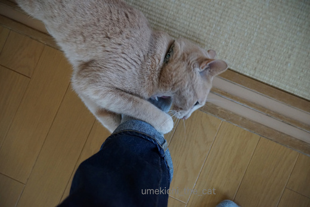
サラダの後はメインディッシュ。
下級下僕（おとーさん）の足をがぶ〜。
 ↑ガブッと一押し↑
↑ガブッと一押し↑
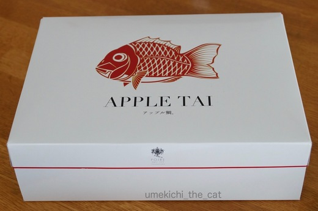
アップルパイのアップル鯛。
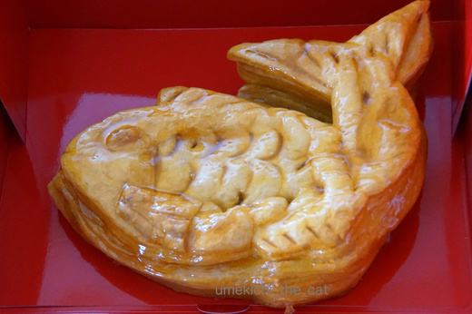
つやっつやのぴっちぴちです。
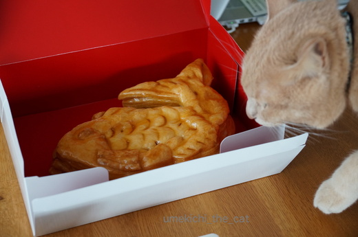
![[猫]](https://blog.ss-blog.jp/_images_e/101.gif) なんやて〜、わしがちぇっくするで。
なんやて〜、わしがちぇっくするで。
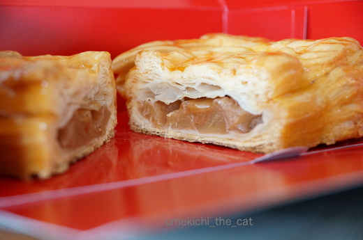
おおお〜！美しい断面。
近所の洋菓子店の名物パイ。おっとからのホワイトデーです。
パイ生地はさくさくで、フィリングもコーティングのアプリコットソースも
甘酸っぱくでとっても好みの味です。
ありがとさん。
お互い要領が分かってきたのかなかなか良い感じになってきました。
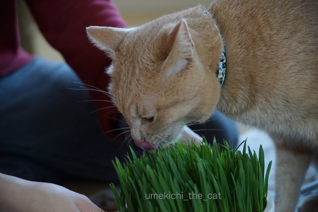
上級下僕がちゃんとサラダ鉢を抑えてあげて梅吉さんが引っこ抜く。
本にゃんは食べてるつもりなんですがほとんど口に入っていません^^;
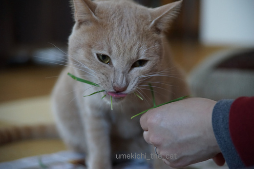
あたりに散乱した草を素早く集めて差し出す上級下僕。
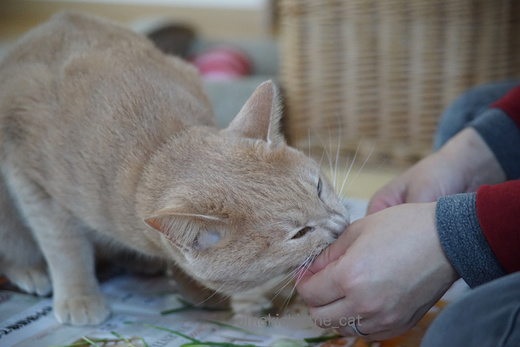
手までかじらないでくださいな。
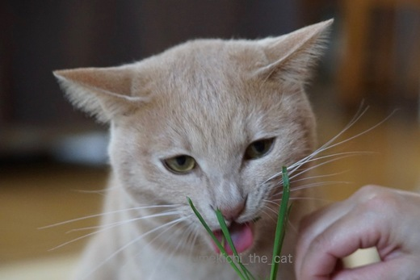
鼻にしわを寄せて真剣に食べてます。妖怪猫の本性が出ちゃってますよ！
草の集め方が遅かったり草の持ち方が悪いと
爪を出した手で下僕の手をぎゅ〜〜〜っと押さえつけてきます。きびしいな〜。
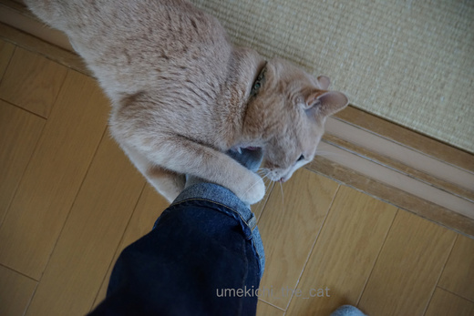
サラダの後はメインディッシュ。
下級下僕（おとーさん）の足をがぶ〜。
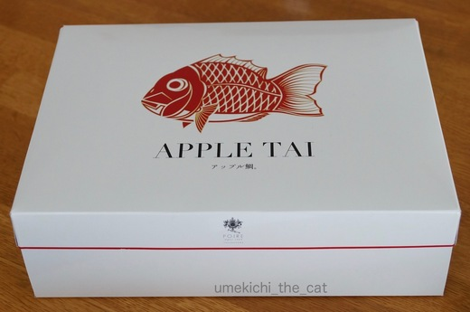
アップルパイのアップル鯛。
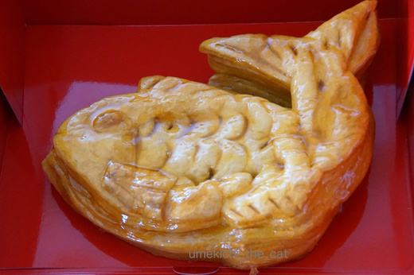
つやっつやのぴっちぴちです。
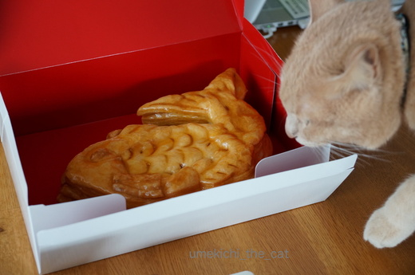
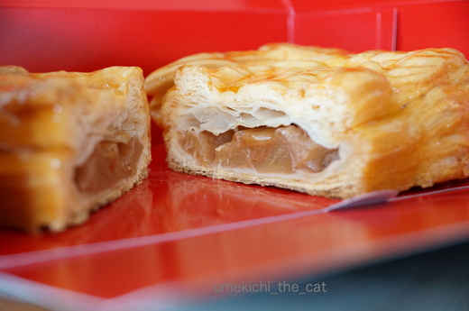
おおお〜！美しい断面。
近所の洋菓子店の名物パイ。おっとからのホワイトデーです。
パイ生地はさくさくで、フィリングもコーティングのアプリコットソースも
甘酸っぱくでとっても好みの味です。
ありがとさん。

カフェオレ色の梅吉

梅吉 2023年8月10日 永眠


梅吉と出会った譲渡会

犬猫の理由なき殺処分ゼロ
妄想広告
UMEKICHI 光

爆発的に早い！
時々攻撃的！
Thanks to Mr.Boss365
爆発的に早い！
時々攻撃的！
Thanks to Mr.Boss365

必至でガジガジするけど口に入らず葉っぱがぴーんてなるんですよね（笑）
by palpal (2017-03-14 15:37)
葉っぱがしなるのでしっかり下僕が持っていないとダメなんでしょうね。アップル鯛すごーい！
by みぃにゃん (2017-03-14 15:57)
必死にガジガジしてますねぇ～♪
うんうん！下僕はしっかり押さえるのですね(#^.^#)
by きぃ (2017-03-14 16:16)
梅吉さん、いい食べっぷり♪
真剣な表情がたまりません♪♪♪
手からあげていると、指まで食われないか心配で・・・肉食獣ですからね～お猫様は(^▽^;)
アップルタイ、飴色のリンゴがおいしそうです(*^▽^*)
今日の記事も印刷して相方の見えるところに貼らなきゃ^^;
by ゆきち (2017-03-14 16:21)
上級下僕殿、貴殿は梅吉さんに良く仕えていますね。
感心です。
下級下僕殿、このがぶ〜が至福の時でしょう。
ホワイトデーが来ましたね。
なんだかメデタイ気分です。
アップルパイ好きです（笑）
アップルパイを見たからなのか、画像認証がエラーになりました（笑）
『umakichi』になっていました。
by kiki (2017-03-14 17:15)
うちのやつも葉っぱを食べるのは何年経っても上手くなりません。。。
スモークチーズをあげるとき、指の感触と似ているせいなのか
誤噛み付きされます。^^;
アップルタイ、美味しそうですね。^^)
by yes_hama (2017-03-14 20:06)
梅吉君、草食べるの下手ねぇ(笑
2枚目、口からピンピン出た草が、緑のおヒゲみたいになってますよ！
草を集めて口に運ぶお仕事、なかなか大変そう！
by BillK-ko (2017-03-14 21:12)
そうそう！草・・・・食べずらいよね
スポスポ根から抜けちゃって口に入らないの←うちの場合
下級下僕(笑)いい仕事してますね！！
by みいこ (2017-03-14 22:02)
うちは最近あったかくなってきたから
猫草育て始めましたｗ
みんにゃが喜ぶ姿が目に浮かびますヾ(*´∀｀*)ﾉ
うちも引っこ抜いてからあげます
そうじゃないと鉢植えがえらいことになるんですよねー。
by sumi-cyan (2017-03-14 22:44)
アップルタイ…(≧▽≦)大阪だからダジャレ？？
にしても、なんで鯛？？
梅吉さんがネコ様みたいに普通に猫草を食べているの、
なんだか不思議に見えます(^^;
梅吉さんは、大阪弁を喋る猫の様に見えるヒト、のイメージです〜。
by も〜 (2017-03-14 22:50)
アップル鯛！
そのネーミングだけで、買ってしまいますわー(^_^;)
by よーちゃん (2017-03-15 08:26)
鼻にしわを寄せて真剣に食べている妖怪猫梅吉さん
滅茶苦茶可愛いですね～♪
アップル鯛美味しそう。
見た目もネーミングも座布団１枚です＾＾
by Moon (2017-03-15 11:03)
palpalさん＞そうそう！必死にガジガジすればするほど口に入らないという・・・^^;
梅吉はイラチなのでガジガジしてるうち腹が立ってくるみたい。笑
みぃにゃんさん＞腕にしっかり力を込めていないと引っ張られちゃう。
「おかーさんしっかりもっといてや！」と指導が入ります。
きぃさん＞下僕は気も、力も抜けません(>Д< ；)
指までガジガジしてくるのでお世話の後は手がおヨダでベトベトです・・・
ゆきちさん＞アンパンマンみたいにスペアがあるんだったら食べられても良いんですけどね〜。
指も相当ガジガジしているので「人間出汁」は味わっていそうです^^;
飴色りんご、くたくた過ぎず固過ぎず甘さも絶妙でした(^○^)
kikiさん＞各下僕、日々心を込めて、身を呈して努めております！
『umakichi』！笑！！なんだか美味しそうですね＾＾
写真を通じてアップル鯛の美味しさが伝わっているようで嬉しかった〜（＾◇＾）
ミスタッチ万歳！！
yes_hamaさん＞アズくんも指を味わっていらっしゃる・・・笑
草はなかなかうまく食べられませんよね〜。
顔や鼻を草にすりつけるような仕草も見せるから
遊び半分で楽しみながら食べているのかもしれませんね。
BillK-koさん＞下手でしょ〜！！(≧▽≦)
カリカリは丸呑みの勢いで食べるのにね。
「さらだはしょっかんをたのしむんやで・・・」とでも言うように
ぐいんと引っこ抜いてシャクシャク食べてます。（口に入ってないけど）
草を集めるのはスピード勝負。気が抜けません・・・
みいこさん＞スポスポ・・・軽やかでいいね！
うちは根っこごとズボズボ引き抜くのよ〜。あたりに土も散乱します。笑
上級下級共に下僕は常に全力ですから(๑˃̵ᴗ˂̵)و
sumi-cyanさん＞暖かいと草の成長スピードが全然違いますよね。
ここ何日か寒い日が続いているので梅吉が次に食べる草が
あまり育っていないのが気になるところですー( ･̆ˍ･̆ )
も〜さん＞ダジャレ！ダジャレよ！！
大阪にはこのセンスの標語とか広告とかが溢れてますから。笑
鯛は「めでたい」ですよ〜。
アップルタイは
ダジャレと縁起もん好きの大阪人の琴線に触れる一品と言えましょう・・・（＾◇＾）
も〜さんには梅吉の中の人が見えているの！？
よ〜ちゃん＞あ、やっぱり笑
ネーミングだけで心惹かれちゃうよね〜＾＾
「不味かったら許さへんで」の期待にもしっかり応えてくれる
アップル鯛でした！
by ちぃ (2017-03-15 11:26)
Moonさん＞梅吉は猫草が好きで好きで・・・
食べさせてや〜と催促してくるんですよ。
でもね、あんまり食べるとうんPが・・・・以下自粛（＾◇＾）
座布団計2枚ですね！ありがとうございま〜す。
私からは味にも1枚！！わ〜座るのが大変になってきた・・・笑
by ちぃ (2017-03-15 11:30)
梅吉さんのサラダの食べ方をちゃんと把握してるなんて
上級下僕さんってばスゴイです=(^.^)=
でもメインディッシュは下級下僕の足ってw
うちは４にゃんともサラダは食べませんが、食べたとしてもきっと常にかみさんなんだろうなぁ・・・(ｰ ｰ;)
アップル鯛、ツヤツヤでとっても美味しそうですねぇ（≧∇≦）
by ニッキー (2017-03-15 21:01)
うふふ。
メインディッシュが一番美味しそうねｗ
わたしもコレやられてます(笑)
足の甲には爪痕よぉ
ハナにしわ、もうね白目むいてる顔同様、大好物ｗｗ
by リュカ (2017-03-16 09:49)
ニッキーさん＞サラダをうまくサーブ出来て
上級下僕に昇格したような気がします（＾◇＾）
足ガブ〜は下級下僕にしかしないんですよ〜。
やっぱり大きくて噛み応えのある所が良いんでしょうか＾＾
リュカさん＞メインディッシュ役はおとーさんの特権！ww
私の足には見向きもしません・・・なぜ〜(ｰ ｰ;)
ハナのしわ私も大好きです！！
しわをなでなでして凸凹の感触を味わうのもまた楽し♪
by ちぃ (2017-03-16 13:22)